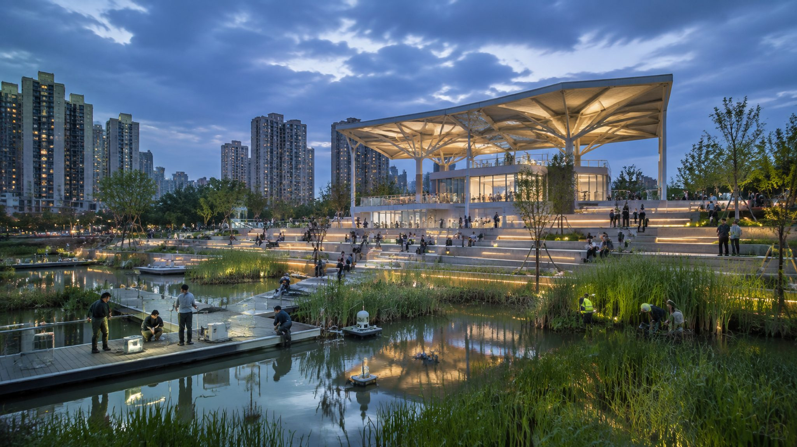
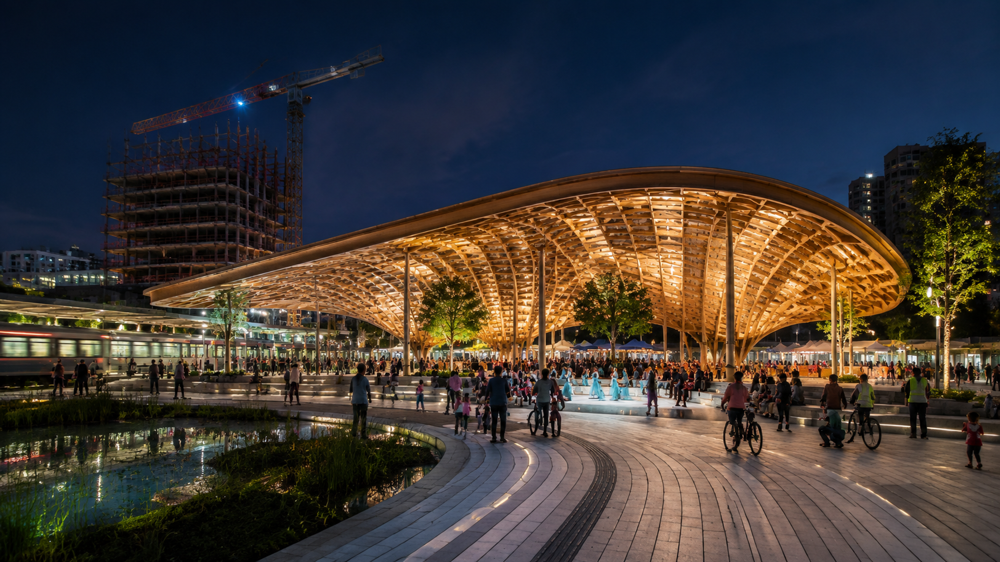
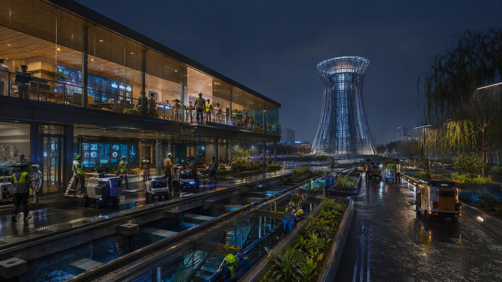

启·序章北京北站时空序章台与 AI 基础设施首段
让百年铁路的线性遗产，成为 AI 时代可行走、可参与、可治理的城市公共操作系统。
JZ 序标以铜金“J”与电光蓝“Z”叠合成双轨：一条承接铁路时间，一条连接 AI 服务；圆环与节点表达沿线的开放连接。
LOGO 以直线骨架、圆角转折与节点端头组织 JZ 缩写，适用于导视、场景编号、公共艺术和数字界面。实施前完成字体、图像、公共艺术及企业标识清权。
启：打开起点；承：延续文脉；创：连接创新链；尚：转化为公共生活方式。


图3–图5主场景保持不变；八张场景图统一纳入运营闭环：服务对象 → 空间载体 → 最小必要数据 → AI 辅助 → 人工复核 → 停止条件。




先公共、后产业；先试点、后扩展；先可解释、后智能化。所有面积、边界和强度指标以 GeoJSON 与正式控规数据复核为准。